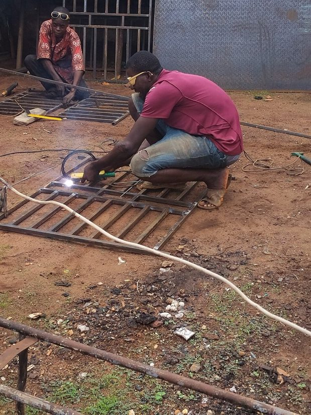
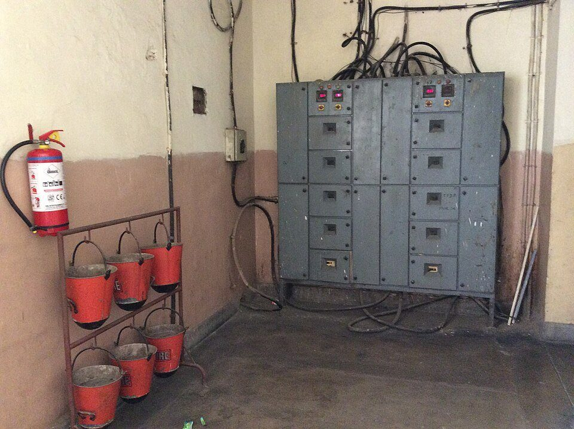
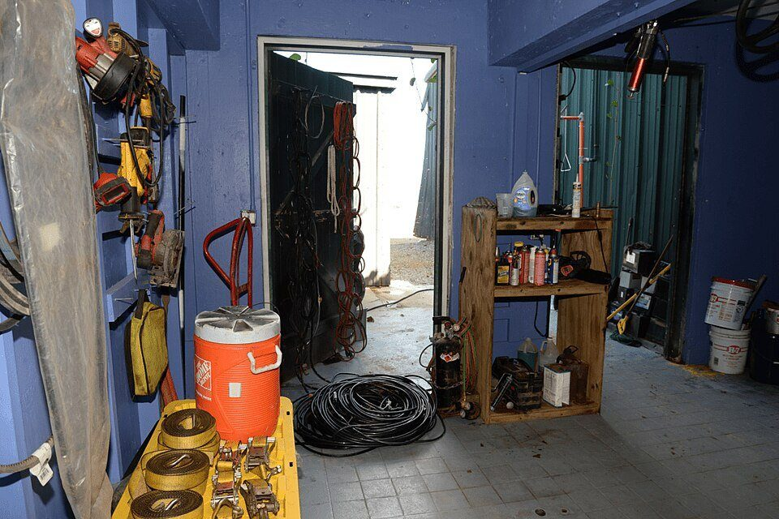
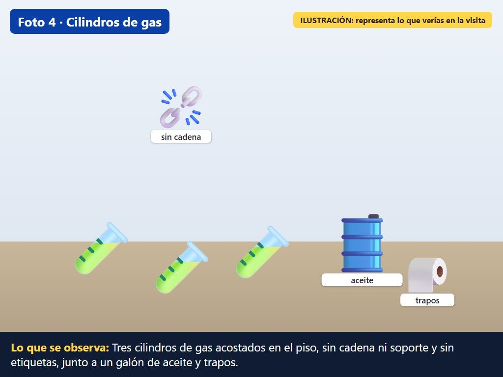
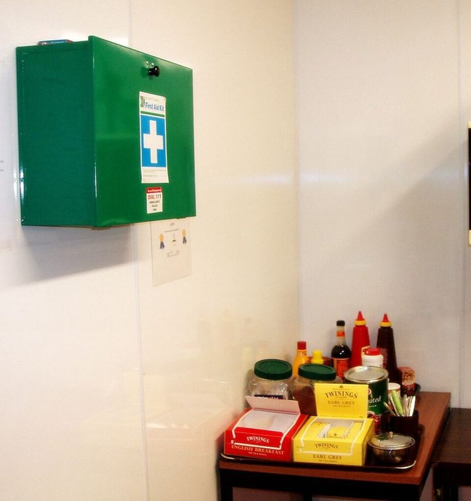
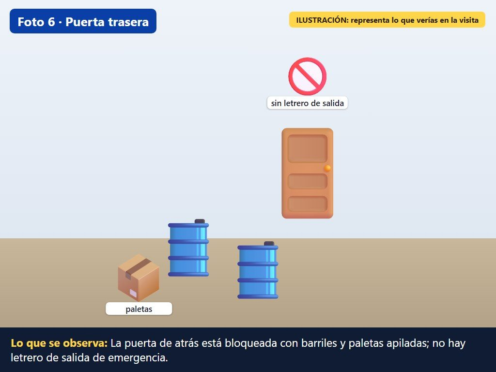

Caso 1: Taller de Soldadura Hermanos Núñez
Tu misión
Eres el equipo de asesores de INFOTEP. Rafael Núñez te pidió ayuda con esta empresa. Tu meta: reducir los riesgos de accidente y poner la empresa en regla con la normativa de SST en tres meses.
- Observa: lee la entrevista y mira las fotos.
- Diagnostica: responde el diagnóstico en la plataforma.
- Planifica: revisa el plan de trabajo y avanza algunas actividades.
- Documenta: llena el kit de Excel y redacta el documento con el Redactor.
- Entrega: escribe el informe final y guarda tus archivos en la carpeta del equipo.
- Sector
- Metalmecánica (soldadura y herrería)
- Ubicación
- Santo Domingo Oeste
- Empleados
- 7 hombres y 1 mujeres
- Años en el mercado
- 9
- Persona de contacto
- Rafael Núñez, 46 años, fundador
- Estrategia a implementar
- Gestión de la Seguridad y la Salud en el Trabajo
1. Entrevista con el dueño
«Llevamos nueve años y gracias a Dios no ha pasado nada grave, pero hace dos meses a un muchacho le cayó una chispa en el brazo. El Ministerio de Trabajo puede venir cualquier día y me preocupa una multa. No tenemos comité de seguridad ni hemos hecho nunca un simulacro. Los muchachos dicen que la careta les estorba y la usan cuando se acuerdan. La política de seguridad no existe en papel. Quiero que me digan qué arreglar primero, porque el presupuesto es limitado.»
2. Recorrido por la empresa (fotos)

Foto 1 · Zona de trabajo
Lo que se observa: Un soldador agachado en el suelo trabaja con arco eléctrico sobre una reja metálica. No se ven careta de soldar ni guantes.
Esta imagen ya está cargada en tu caso en la plataforma.

Foto 2 · Pared lateral del taller
Lo que se observa: Pared del taller con un tablero eléctrico abierto, cables colgando, un extintor y cubetas rojas con arena.
Esta imagen ya está cargada en tu caso en la plataforma.

Foto 3 · Interior del taller
Lo que se observa: Interior del taller: herramientas colgadas en la pared, un rollo grande de cable en el piso y la puerta del fondo abierta.
Esta imagen ya está cargada en tu caso en la plataforma.

Foto 4 · Rincón del fondo ilustración
Lo que se observa: Tres cilindros de gas acostados en el piso, sin cadena ni soporte y sin etiquetas, junto a un galón de aceite y trapos.
Esta imagen ya está cargada en tu caso en la plataforma.

Foto 5 · Pared de la entrada
Lo que se observa: Caja verde con cruz blanca colgada en la pared, con un letrero informativo; debajo hay una mesa con productos.
Esta imagen ya está cargada en tu caso en la plataforma.

Foto 6 · Puerta de atrás ilustración
Lo que se observa: La puerta de atrás está bloqueada con barriles y paletas apiladas; no hay letrero de salida de emergencia.
Esta imagen ya está cargada en tu caso en la plataforma.
3. Tu trabajo en la plataforma
Tu caso ya está creado en tu cuenta de la plataforma, con la solicitud del servicio y estas fotos cargadas, con este nombre (el número de tu equipo está en tu hoja de usuarios). No crees otro:
Taller de Soldadura Hermanos Núñez - Equipo N
Estrategia del caso: Gestión de la Seguridad y la Salud en el Trabajo.
Documento que debes redactar con el Redactor (✨ Niko): Política de seguridad y salud en el trabajo (personalizada).
Herramientas de la plataforma para este caso:
- Fotos con hallazgos
- Diagnóstico SST
- Planner (plan de trabajo)
- Kit Matriz de riesgos
- Redactor con Niko: Política de seguridad y salud en el trabajo (personalizada)
4. Carpeta de entregables (tu lista de cotejo)
Así lo harías en una asesoría real: al final entregas una carpeta con todo esto. Tu supervisora, que no estará en el aula, revisará después esta lista de cotejo: revisa tú mismo que no falte nada.
- ☐ Ficha de la empresa completa (la solicitud ya viene cargada)
- ☐ Objetivo del servicio definido
- ☐ Visita realizada con su ayuda memoria
- ☐ Hallazgo escrito y confirmado en cada foto del caso
- ☐ Diagnóstico completo (más del 70 % de los criterios respondidos)
- ☐ Plan de trabajo con responsables y fechas
- ☐ Avance registrado en el cronograma (al menos 2 actividades)
- ☐ Kit de medición en Excel trabajado y subido a Documentos
- ☐ Documento de implementación (Word hecho con el Redactor)
- ☐ Informe final con mejoras y recomendaciones
- ☐ Carpeta comprimida con portada, subida al Proyecto final (Unidad V) por una sola persona
Desarrollado por Johan Tapia, PhD